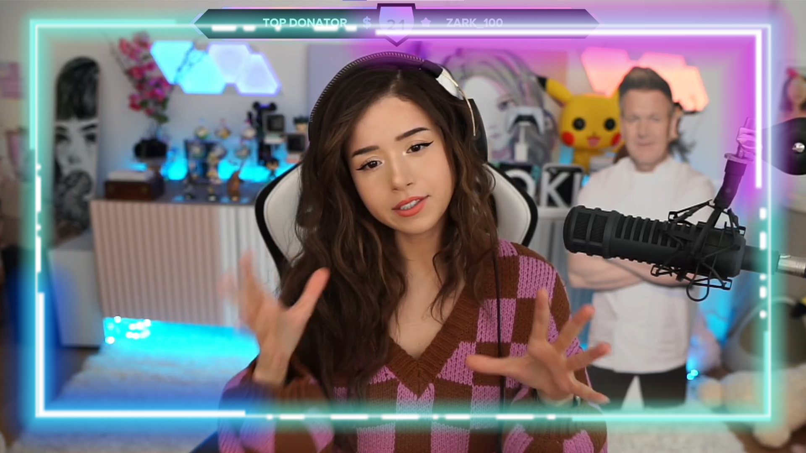
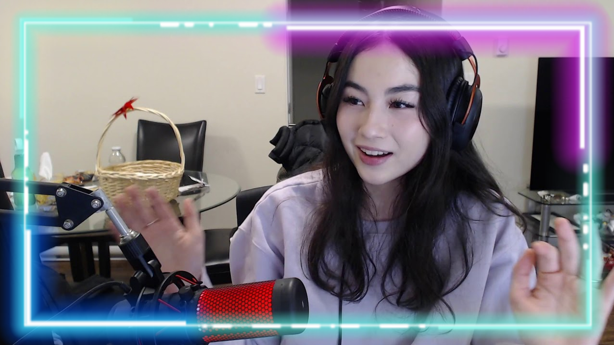
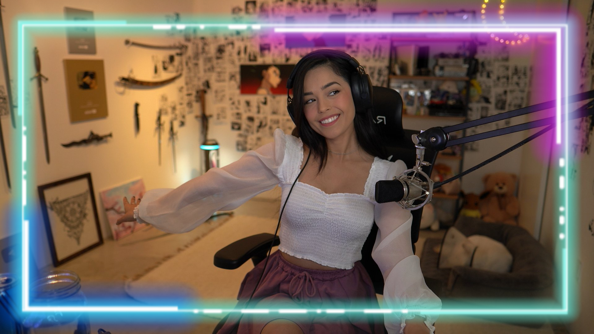

Live streaming has become popular, especially since the pandemic hit. Streaming has become such a major point in pop culture, and many have resorted it to feel a sense of community in a time where we have been so isolated. From being a streamer to being a viewer, streaming has become prevalent.
Imane Anys, better known as Pokimane is a Moroccan-Canadian Twitch streamer and YouTuber. She is best known for her live streams on Twitch, broadcasting video game content, most notably in League of Legends and Fortnite. She is currently the most-followed female streamer on the platform. She is a member and co-founder of OfflineTV, an online social entertainment group of content creators. In her career, she has faced countless years of harassment from the streaming community to the Youtube community. Commentary videos criticizing her character down to the bone would come out, trying to justify any mistake of hers as an indication of her hurtful character. People would downplay her accomplishments down to her good looks and to "simps," which is simply false because she has a major fanbase of many supportive women. She has been told constantly to show her b0obs on camera, to do explicit content, but despite her entire image being against that, many still boil her down to someone who doesn't deserve human respect and decency -- in their eyes, a girl. "
Kyedae Shymko, better known mononymously as Kyedae, is a Japanese-Canadian Twitch streamer and content creator of 100 Thieves. She is engaged to e-sports player TenZ. Kyedae was introduced through streams of her then-boyfriend TenZ, where she learned how to play Valorant. She began streaming on her own as she became more skilled in the game, eventually meeting several gamers including Offline TV and Friends and grew her own following. Kyedae is known for her Valorant gameplays where she is aiming to reach Radiant. She also regularly streams with her fiancé TenZ, where her offbeat, dirty sense of humor contrasts with TenZ's cleaner image. She joined 100 Thieves in April 2021. Kyedae has been the victim of many death threats and people who tell her that she is only successful because of her boyfriend. She consistently strives to break stereotypes against women being carried by men in the gaming industry, by streaming her solo queue competitive games and making content that proves she belongs in the rank she is in. Kyedae is also a very straightforward person who does not take bullsh*t from anyone, reinforcing that women are not pushovers and should be treated seriously.
Rachell Hofstetter, better known as Valkyrae, is an American Internet personality. She has been YouTube's most-watched female streamer since 2020, and appeared on Forbes' 30 Under 30 list in 2022. She was named "Gaming Creator of the Year" by Adweek, and has won a Game Award and a Streamy Award. Hofstetter is a co-owner of 100 Thieves, an esports and an apparel company, and has been a content creator for the brand since 2018. Hofstetter is an advocate for women in online gaming, sometimes playing games on all-female teams. Despite being a very "unproblematic" streamer and person who does not involve themselves with "drama" in the gaming community, Valkyrae receives harsh criticism about her character and online persona. Many often look down on her because some think her to be too "childish." Valkyrae is a great inspiration to women because she holds powerful positions in gaming, as one of the co-owners of 100 Thieves, a gaming organization, and a Forbes Under 30 leader.